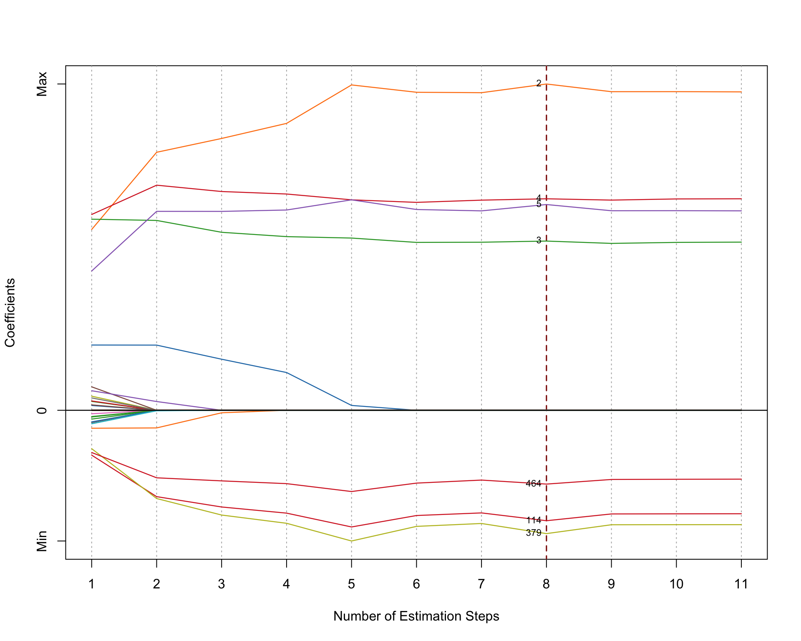

The msaenet package implemented the multi-step adaptive elastic-net method introduced in Xiao and Xu (2015) for feature selection in high-dimensional regressions.
Let’s load the package:
library("msaenet")First, we generate some simulated data under a setting often used for testing high-dimensional linear models, with the function msaenet.sim.gaussian():
dat = msaenet.sim.gaussian(n = 150, p = 500, rho = 0.6,
coef = rep(1, 5), snr = 2, p.train = 0.7,
seed = 1001)The parameter rho controls the degree of correlation among the variables. The parameter coef sets the coefficients of the “true” variables, and in this case, the first 5 variables will have coefficient 1 while the other 495 variables will have coefficient 0. snr represents the designated signal-to-noise ratio (SNR) in the simulated data. Parameter p.train decides the proportion of the training set (relative to the total number of observations n).
The returned object dat contains both the training and test set. We will only use the training set to do the modeling (parameter tuning and model fitting), and then evaluate the model’s performance on the test set independently.
msaenet.fit = msaenet(dat$x.tr, dat$y.tr,
alphas = seq(0.1, 0.9, 0.1),
nsteps = 4L, seed = 1003)The parameter alphas sets the alpha tuning grid for elastic-net in all adaptive estimation steps. nsteps indicates how many adaptive estimation steps should be used.
The internal parameter tuning is done automatically by k-fold cross-validation, and the parameters which produce the minimum prediction errors will be selected. You could also set parallel = TRUE and run
library(doParallel)
registerDoParallel(detectCores())before calling this function to make the parameter tuning run in parallel. This will probably save some time if the alphas grid is denser and the data size is larger.
Let’s inspect the fitted model, by looking into the selected variables (variables with non-zero coefficients), and the number of false positive selections/true positive selections:
msaenet.nzv(msaenet.fit)## [1] 2 3 4 5 35 114 171 312 379 441 464msaenet.nzv.all(msaenet.fit)## [[1]]
## [1] 1 2 3 4 5 6 33 35 49 54 74 114 135 171 177 178 226
## [18] 244 262 263 312 358 363 379 388 441 463 464 500
##
## [[2]]
## [1] 1 2 3 4 5 35 49 114 171 263 312 379 441 464 500
##
## [[3]]
## [1] 2 3 4 5 35 49 114 171 312 379 441 464 500
##
## [[4]]
## [1] 2 3 4 5 35 114 171 312 379 441 464
##
## [[5]]
## [1] 2 3 4 5 35 114 171 312 379 441 464msaenet.fp(msaenet.fit, 1:5)## [1] 7msaenet.tp(msaenet.fit, 1:5)## [1] 4Next, we make predictions on the test set using the fitted model, and compute some evaluation metrics, such as RMSE and MAE:
msaenet.pred = predict(msaenet.fit, dat$x.te)
msaenet.rmse(dat$y.te, msaenet.pred)## [1] 2.547418msaenet.mae(dat$y.te, msaenet.pred)## [1] 1.911691Make a parallel coordinates plot showing the coefficient changes of all the variables across every estimation step:
plot(msaenet.fit)
The y-axis in the plot represents the relative effect sizes (standardized into [0, 1]) of the variables.
The vanilla adaptive elastic-net (Zou and Zhang 2009) is also supported in the msaenet package. Please check the function aenet() for details. All the analyses above apply to the models fitted by aenet() as well.
If you used msaenet in your research, please feel free to cite our paper (Xiao and Xu 2015) in your publications. If you have any questions or have a bug to report, please email me or create an issue on GitHub.
Xiao, Nan, and Qing-Song Xu. 2015. “Multi-Step Adaptive Elastic-Net: Reducing False Positives in High-Dimensional Variable Selection.” Journal of Statistical Computation and Simulation 85 (18): 3755–65.
Zou, Hui, and Hao Helen Zhang. 2009. “On the Adaptive Elastic-Net with a Diverging Number of Parameters.” The Annals of Statistics 37 (4): 1733–51.